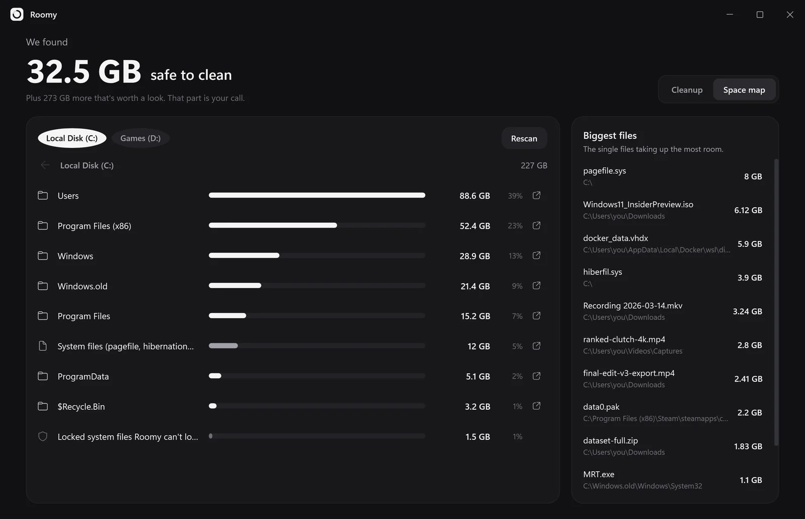
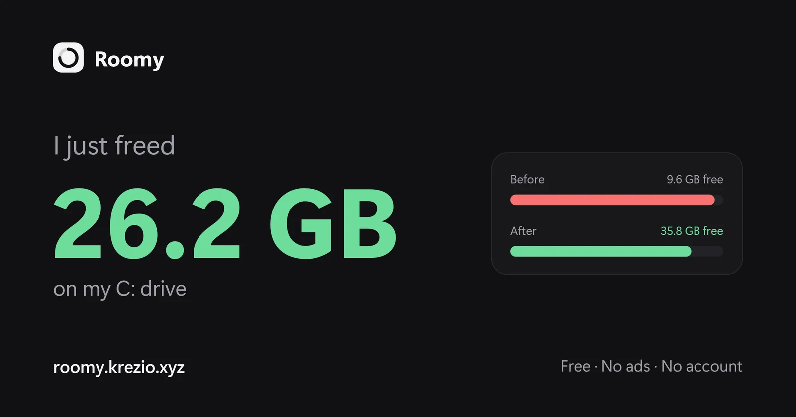

Windows Update leftovers
Installed updates Windows keeps "just in case". Often the biggest single win.
Roomy shows you what's eating your space, in plain English, and clears the safe stuff in one click. A free storage cleaner for Windows that doesn't try to sell you anything.
Free for Windows 10 and 11 · Works offline · Open source
The real app, recorded with demo files. No edits.
Tick what you want gone and hit clean. Watch the bar.
You just freed 0 GB. That's the whole app: no account, no upsell.
On a typical PC that's 10–40 GB you didn't know you could get back.
Installed updates Windows keeps "just in case". Often the biggest single win.
Discord, VS Code, Slack, Teams, Steam, npm, pip, Yarn, NuGet. They rebuild what they need.
Chrome, Edge, Brave, Vivaldi, Firefox and Opera. You stay logged in everywhere.
NVIDIA, AMD, Intel and DirectX caches that quietly grow into gigabytes.
Reads your Steam library and finds the 70 GB game you last opened in March. Uninstalls through Steam.
That 300 MB setup.exe you ran once. Always unticked, always your call.
Not sure what "Other" is? Click down through any drive folder by folder, and see the single biggest files on your PC in one list.

Most "PC cleaners" are scary for a reason. Roomy only looks in known junk folders, and explains everything before it touches anything.
When you're done, Roomy makes a before-and-after card you can paste straight into Discord or the group chat.

Yes. No trial, no "Pro", no ads. It's open source under the MIT license.
No. Roomy only looks in known cache and temp locations, and your personal folders are blocked in the code. Downloads are only ever suggested, unticked, and you confirm before anything is removed.
Windows locks its own update leftovers. Roomy works fine without admin; it just can't clean those until you allow it.
No. Roomy doesn't connect to the internet.
Not right now. Roomy is made for Windows 10 and 11.
Open source. If Roomy helped you, a star helps other people find it.